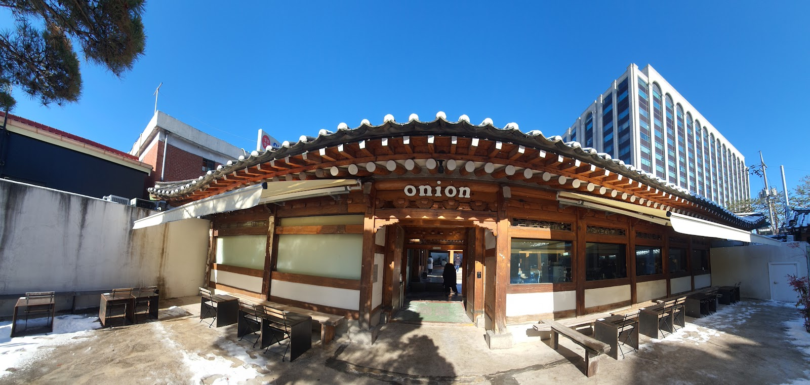

Cafe Onion Anguk: A Hanok Café Break in the Heart of Seoul
In brief: Cafe Onion Anguk combines coffee and baked goods with the distinctive setting of a traditional-style hanok in Seoul’s Anguk area. It’s a natural stop while exploring the historic lanes nearby, especially if you’re looking for a café experience that feels closely tied to its neighborhood.
Address: 5 Gyedong-gil, Jongno District, Seoul
Google rating: 4.2/5 from 4,689 reviews. Ratings and review totals can change.
A café with a sense of place
In Seoul, a café can be more than a place to pause for a drink. It can also offer a window into the character of the neighborhood around it. Cafe Onion Anguk is a good example: rather than feeling like a generic coffee stop, it brings visitors into a hanok-style setting in one of the city’s best-known historic districts.
The building’s traditional forms and intimate scale make a striking contrast with the bustle of central Seoul. Details such as tiled roofs, timber, and courtyard-style spaces give the visit a different rhythm from a café in a modern office block. The setting is part of the appeal, so take a moment to look around rather than treating the stop as a quick takeaway run.
That atmosphere also makes the café a fitting pause during a day spent exploring the surrounding area. Anguk and the neighboring historic quarters are known for lanes, traditional architecture, and cultural sights. Cafe Onion can work as a place to rest between walks, or as a destination for visitors who want to experience a carefully adapted historic-style space.
What to expect
Cafe Onion is known as a bakery café, with coffee and baked goods at the center of the experience. The selection may vary, so check the display when you arrive and ask the staff if you have questions about ingredients. If you have an allergy or dietary restriction, don’t rely on appearance alone: confirm the relevant details directly with the café.
Come with flexible expectations about seating and pace. Cafés in popular sightseeing areas can be busy, and the experience may feel different depending on the time and day of your visit. If the space is crowded, be considerate of other guests taking photos or enjoying a quiet break. A traditional-style layout may also include changes in level or narrow transitions; take care as you move through the space.
Google Maps lists Cafe Onion Anguk at 4.2 out of 5, based on 4,689 reviews at the time of this listing. That score is a useful snapshot, not a guarantee that every visit will be the same. For current visitor comments, check the map listing before you go. Naver search results did not provide a reliable matching local listing, so no Naver rating is included here.
How to make it part of your day
Use the café as one stop in a neighborhood walk rather than planning your entire day around it. The surrounding Anguk area connects naturally with Seoul’s historic sights and traditional lanes, making it easy to pair a café break with sightseeing. Since the lanes can be less straightforward than a large avenue, save the map pin before setting out and follow the address shown in your preferred navigation app.
If you’re visiting with a group, agree on a meeting point and check that everyone has the café’s exact address. The area’s compact streets can make it easy to lose sight of one another while walking. Allow some extra time if you hope to sit down, and keep an alternative nearby in mind in case the café is full.
Good to know
- Check current details: Opening hours and other operating information can change. Confirm the latest updates on the café’s official Instagram before your visit.
- Bring the address: Use “5 Gyedong-gil, Jongno District, Seoul” in your map app, or open the Google Maps link below.
- Plan for a popular area: Visitor numbers and seating availability can vary. A little flexibility helps, particularly on a sightseeing day.
- Be mindful of the setting: Treat the building and its furnishings with care, and be considerate when taking photographs around other guests.
- Ask about food: Baked goods and ingredients may vary. Check directly with staff if you need specific dietary information.
Useful links
FAQ
Is Cafe Onion Anguk worth visiting for the setting?
It may appeal to visitors who enjoy cafés in traditional-style buildings. The hanok atmosphere is a central part of the experience, alongside coffee and baked goods.
Do I need to check opening hours before going?
Yes. Hours can change, so check the café’s official Instagram for current information before you set out.
Can I expect a seat right away?
Not necessarily. Crowds and seating availability vary, so allow extra time and consider a backup café if your schedule is tight.